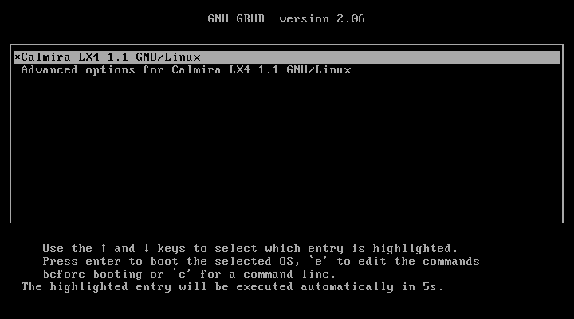
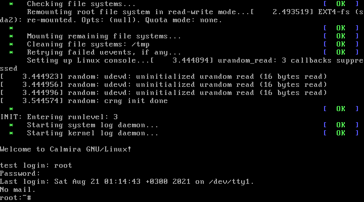

| Установка Calmira GNU/Linux | ||
|---|---|---|
| Назад | Домой | Далее |
| Завершение установки | Настройка системы |
В предыдущей инструкции вы ввели команду reboot для перезагрузки. После того, как ваш ПК включится, вас будет приветствовать загрузочное меню GRUB:
Для загрузки Calmira выберите пункт Calmira LX4 1.1 GNU/Linux. Во время загрузки будут выведены сообщения ядра, а через какое-то время - сообщения загрузки сервисов SysVInit. Как только появится сообщение Welcome to Calmira GNU/Linux!, система будет загружена полностью. Она запросит у вас логин и пароль. Введите их, если во время настройки вы создавали пользователя, если нет, то зайдите из-под корневой учётной записи и продолжите дальнейшую настройку. Логин: root, пароль: root.
Welcome to Calmira GNU/Linux! calm-pc login: Password: |
Примерное содержимое экрана после окончания загрузки системы. Вместо calm-pc может быть ваше имя хоста, которое вы указывали во время настройки дистрибутива.
Если вы ввели логин, а пароль не вводите на протяжении 60 секунд, то у вас снова отобразится приветственное сообщение Welcome to... и запрос к вводу логина и пароля. Учитывайте, что вы не увидите никаких символов при вводе пароля. Это правило актуально так же для утилит su и sudo.
После удачного входа в систему отобразится дата последнего входа в Calmira, число пропущенных e-mail сообщений (в случае отсутствия отобразится No mail.), а так же системное приглашение к вводу команды (PS1): root:~#. Вместо root будет имя пользователя, под которым вы вошли в систему, : разделяет имя пользователя и директорию в которой он находится, соответственно, вместо ~ будет отображаться та директория, в которой находится пользователь. Знак ~ означает, что вы находитесь в своей домашней директории. Если вы вошли от имени root, то помимо соответствующего имени в начале приглашения (до двоеточия), в конце приглашения (после рабочей директории) будет отображён знак #. Он означает, что вы имеете повышенные привилегии, так как зашли от имени root. Если вы вошли от имени обычного пользователя, то вместо этого знака будет $.
После входа в систему вы можете работать с ней: создавать, редактировать и перемещать файлы, устанавливать дополнительное ПО из системы портов и прочее. Но сейчас рекомендуем перейти к следующему пункту - "Настройка дистрибутива".
| Назад | Домой | Далее |
| Завершение установки | Настройка системы |